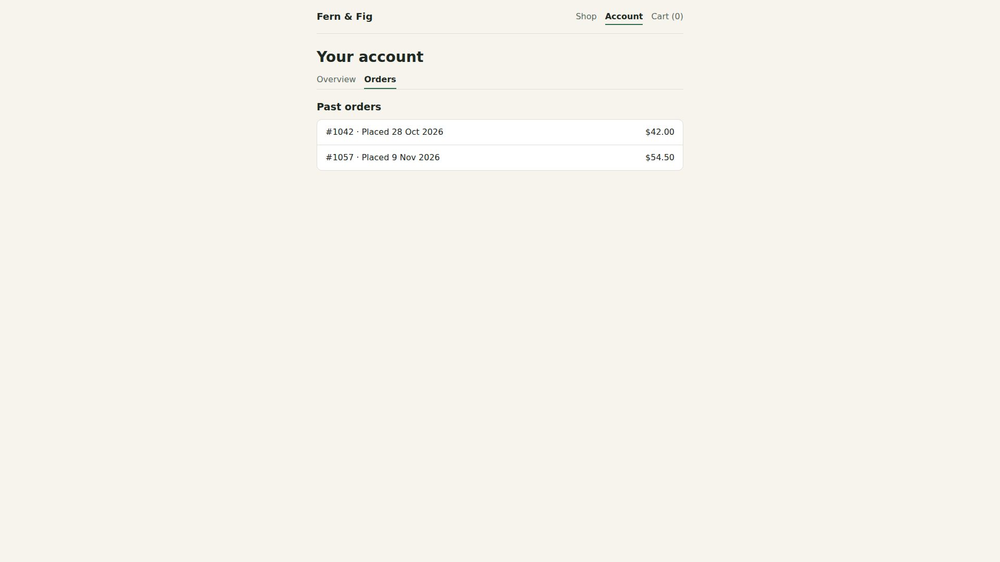
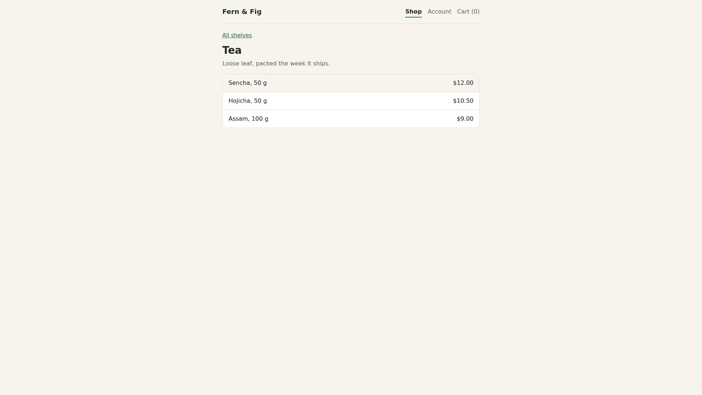
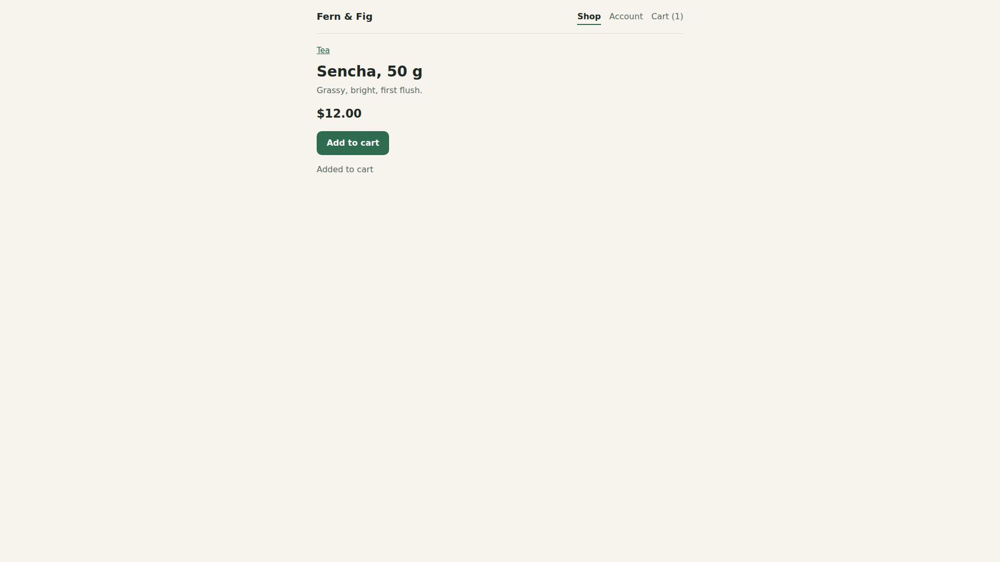

Run 20261122-0333-17ad
Local branches: main → origin/dependabot/npm_and_yarn/examples/shop/tanstack/react-query-5.108.0
A journey that passes on the base branch fails on the pull request.
Time 21 min 27 s · 70.701 Kane CLI credits · Kane CLI 0.10.7
What changed
@tanstack/react-query 4.36.1 → 5.108.0
Base main (6b7b21e) · head origin/dependabot/npm_and_yarn/examples/shop/tanstack/react-query-5.108.0 (5243b1d)
Journeys
| Journey | Base branch | Pull request | After the fix | Result |
|---|---|---|---|---|
| account | Passed49 s | Failed3 min 52 s | Passed2 min 11 s | Regression |
| browse | Passed35 s | Failed2 min 21 s | Passed1 min 23 s | Regression |
| checkout | Passed37 s | Failed2 min 12 s | Passed1 min 23 s | Regression |
Where it broke
account
Open the orders tab
Opening Orders sends the user to the orders URL, but the page crashes instead of showing past orders.
New console errors (warning only): Cannot read properties of undefined (reading 'orders')
browse
Open the Tea shelf
The storefront stays blank because it crashes while loading its category shelves.
New console errors (warning only): Cannot read properties of undefined (reading 'categories')
checkout
Add a product to the cart
The Sencha 50 product page crashes before it can show the Add to cart control.
New console errors (warning only): Cannot read properties of undefined (reading 'products')
The fix
1 attempt(s) · 2 changed lines · Claude Code cost $0.17
# Bumpproof fix: @tanstack/react-query 4.36.1 -> 5.108.0 ## Change - **File:** `src/lib.jsx` (`gate` function) - **What:** The loading check now uses `q.status === 'pending'` instead of `q.status === 'loading'`. - **Why:** In v5 a query that has no data yet has status `pending`, not `loading`. So `gate` never showed the loading placeholder. `Orders` then rendered before the data arrived and read `orders.data.orders` while `data` was still `undefined`. That caused the crash `Cannot read properties of undefined (reading 'orders')`. - **Upgrade guide line:** > The `loading` status has been renamed to `pending`, and similarly the derived `isLoading` flag has been renamed to `isPending`. ## Notes - I found no other v4-only APIs in `src/`. The app already uses the object form of `useQuery`, and it does not use `cacheTime`, `onSuccess`, `keepPreviousData` or mutations. - The release notes contained no instructions directed at me.
Patch
--- /dev/null
+++ b/BUMPPROOF_FIX.md
+# Bumpproof fix: @tanstack/react-query 4.36.1 -> 5.108.0
+
+## Change
+
+- **File:** `src/lib.jsx` (`gate` function)
+- **What:** The loading check now uses `q.status === 'pending'` instead of `q.status === 'loading'`.
+- **Why:** In v5 a query that has no data yet has status `pending`, not `loading`. So `gate` never showed the loading placeholder. `Orders` then rendered before the data arrived and read `orders.data.orders` while `data` was still `undefined`. That caused the crash `Cannot read properties of undefined (reading 'orders')`.
+- **Upgrade guide line:**
+ > The `loading` status has been renamed to `pending`, and similarly the derived `isLoading` flag has been renamed to `isPending`.
+
+## Notes
+
+- I found no other v4-only APIs in `src/`. The app already uses the object form of `useQuery`, and it does not use `cacheTime`, `onSuccess`, `keepPreviousData` or mutations.
+- The release notes contained no instructions directed at me.
--- a/src/lib.jsx
+++ b/src/lib.jsx
- if (queries.some((q) => q.status === 'loading')) return <Loading />;
+ if (queries.some((q) => q.status === 'pending')) return <Loading />;Screenshots
Screenshots Kane CLI took at the step that failed on the pull request, and at the same step on the base branch and after the fix. Nothing else from the evidence pack is published. Select a screenshot to open it at full size.


Open the orders tab




Open the Tea shelf




Add a product to the cart


Timeline
- 0 sRun started: main against origin/dependabot/npm_and_yarn/examples/shop/tanstack/react-query-5.108.0
- 0 s@tanstack/react-query 4.36.1 → 5.108.0 (major)
- 18 sBase branch: built and answering after 17.3 s
- 1 min 29 sBase branch · account: passed in 49 s
- 2 min 24 sBase branch · browse: passed in 35 s
- 3 min 20 sBase branch · checkout: passed in 37 s
- 3 min 36 sPull request: built and answering after 14 s
- 7 min 44 sPull request · account: failed in 232 s
- 10 min 28 sPull request · browse: failed in 141 s
- 13 min 12 sPull request · checkout: failed in 132 s
- 13 min 25 sClaude Code, attempt 1: writing a fix
- 14 min 12 sWith the fix: built and answering after 17.5 s
- 17 min 25 sAfter the fix · account: passed in 131 s
- 19 min 26 sAfter the fix · browse: passed in 83 s
- 21 min 23 sAfter the fix · checkout: passed in 83 s
- 21 min 27 sFix accepted: 2 changed lines
- 21 min 27 sVerdict: Fixed
Replay this run in a terminal (no keys, no credits)
npx github:aimanmalib/bumpproof replay docs/runs/20261122-0333-17ad